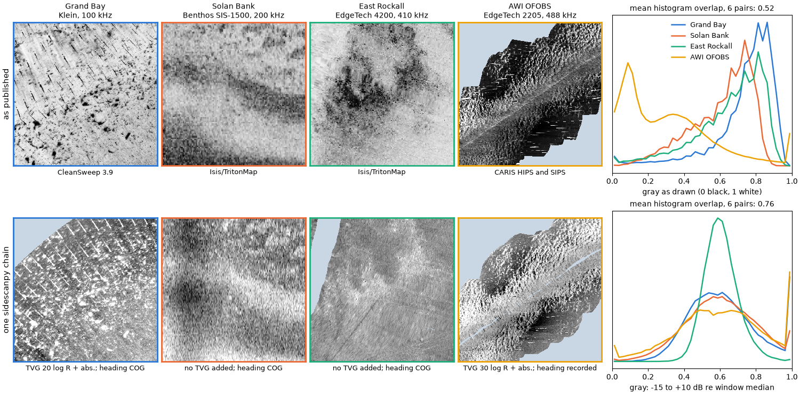

Note
Go to the end to download the full example code.
Four published chains, four looks; one recorded chain, one scale#

A sidescan mosaic is the recorded pings plus every choice the processing made: the gain curve, the navigation, how the beam pattern was flattened, how the samples were gridded and how dB became gray. Four agencies published raw recordings together with their own mosaics of the same lines, each made with different software. Side by side the published mosaics disagree on almost everything a reader would use to compare seabeds: which way strong echoes are drawn, how bright the seabed is, how much contrast it has. Part of that is the seabed and the sonar. Much of it is the processing, and the processing is not recorded with the product.
Here every line goes through one chain whose every step is recorded in
the dataset’s processing_history, and every window is drawn on one
scale: dB relative to the window’s median, -15 to +10 dB, strong echo
bright. The chain and the scale are choices too; the point is that they
are written down and the same for all four, so what differs between the
bottom panels is the data.
Data (see Example data): USGS Grand Bay 2015 (public domain); JNCC Solan Bank 2008 and East Rockall 2009 (Open Government Licence v3.0); AWI OFOBS PS124, PANGAEA 939172 and 939087 (CC BY 4.0). These are large files (about 830 MB in all, with the Grand Bay mosaic the largest); the first run downloads them.
Usage: python examples/gallery/plot_four_published_chains.py [output_dir]
# 2026 rshomberg@uri.edu
import itertools
import json
import sys
import warnings
from pathlib import Path
import matplotlib.pyplot as plt
import numpy as np
import rasterio
from pyproj import Transformer
from rasterio.windows import from_bounds
from scipy.interpolate import griddata
from scipy.spatial import cKDTree
from sidescanpy import datasets
from sidescanpy.io import read_and_convert
from sidescanpy.log import configure_logging
from sidescanpy.processing import (
correct,
course_over_ground,
interpolate_aux_onto_pings,
smooth_navigation,
)
from sidescanpy.processing.correct import Step
from sidescanpy.processing.range_correction import RangeCorrectionTable, fit_range_correction
out = Path(sys.argv[1]) if len(sys.argv) > 1 else Path(".")
out.mkdir(parents=True, exist_ok=True)
configure_logging("ERROR")
WINDOW_M, CELL_M = 80.0, 0.25
The four lines#
One line from each release, the published mosaic that covers it, and an 80 m window on that line, given in the mosaic’s own map projection. The per-line settings describe the sonar and its installation, not the look: which frequency, whether the recorded heading is used or the course over ground, the TVG (below), and where the release says the recorded positions are not the towfish’s.
Grand Bay: the USGS metadata puts the towfish 1.85 m to starboard and 0.20 m forward of the GPS antenna (a pole mount).
Solan Bank: the positions are the ship’s and no layback was recorded. Shifting the chain’s image along track until it best matches the published mosaic gives 338 m (one clear peak).
East Rockall: navigation is stored as UTM zone 29N without saying so (
nav_crs).AWI OFOBS: five consecutive files; the frame’s positions are USBL fixes and its compass is good, so the recorded heading is kept.
LINES = {
"Grand Bay": dict(
raw=["usgs_grand_bay_150602202800.xtf"], fmt="xtf", read={},
product="usgs_grand_bay_mosaic_30cmgray.tif", software="CleanSweep 3.9",
sonar="Klein, 100 kHz", centre=(371320.0, 3361200.0), cog=True,
tvg={"spreading_loss_db": 20.0},
layback={"layback_m": 0.0, "tow_point_aft_m": -0.20, "tow_point_starboard_m": 1.85},
),
"Solan Bank": dict(
raw=["jncc_solan_bank_SB04_10.xtf"], fmt="xtf", read={},
product="jncc_solan_bank_SB4_10.tif", software="Isis/TritonMap",
sonar="Benthos SIS-1500, 200 kHz", centre=(376260.0, 6526030.0), cog=True,
tvg={"spreading_loss_db": 0.0, "absorption_db_per_m": 0.0},
layback={"layback_m": 338.0},
),
"East Rockall": dict(
raw=["jncc_east_rockall_ER_C1_SS_001_6.xtf"], fmt="xtf", read={"nav_crs": "EPSG:32629"},
product="jncc_east_rockall_ER_C1_SS_001_6_CMG.tif", software="Isis/TritonMap",
sonar="EdgeTech 4200, 410 kHz", centre=(609290.0, 6374950.0), cog=True, freq="hz_410000",
tvg={"spreading_loss_db": 0.0, "absorption_db_per_m": 0.0}, layback=None,
),
"AWI OFOBS": dict(
raw=["awi_ofobs_ps124_20210217004957.jsf", "awi_ofobs_ps124_20210217005306.jsf",
"awi_ofobs_ps124_20210217005615.jsf", "awi_ofobs_ps124_20210217005924.jsf",
"awi_ofobs_ps124_20210217010233.jsf"],
fmt="jsf", read={},
product="awi_ofobs_ps124_026_07_ssh_10cm_part1.tiff", software="CARIS HIPS and SIPS",
sonar="EdgeTech 2205, 488 kHz", centre=(1106915.0, 3436795.0), cog=False, freq="hz_488500",
tvg={"spreading_loss_db": 30.0}, layback=None,
),
}
The one chain#
Library steps, plus two small custom steps that
correct() records like the built-in ones:
interpolate_aux: navigation between the real fixes onto the ping times, thensmooth_navigation()(20 s) to take out position jitter.heading_from_cog(custom): the course over ground as heading, where the towfish compass does not register the swath to the product.layback: the release’s antenna-to-towfish offset or layback, where there is one.bottom_track: altitude from the first bottom return, every ping.tvg: per sonar, the flattest level against range of 0, 20, 30 or 40 log R with and without absorption. Solan Bank and East Rockall come out flattest with no TVG at all: their recorder already applied one.geometric: slant to ground range over a flat seabed.blank_nadir(custom): the water column and samples within 20° of vertical (or 3.5 m) set to no data, as vendor mosaics do.range_correction: a level-against-range curve fitted on the same pings (fit_range_correction()), which flattens what TVG leaves, mostly the beam pattern.georef: a position for every sample.
Then every sample is placed on the window’s 0.25 m cells by linear interpolation in dB, after averaging consecutive samples down to half a cell, and cells farther than 1.5 m from any sample stay empty.
def heading_from_cog(ds, *, half_window_s=5.0):
"""Use the course over ground as ``heading_deg``."""
return ds.assign(heading_deg=("ping", course_over_ground(ds, half_window_s=half_window_s).astype(np.float32),
ds["heading_deg"].attrs))
def blank_nadir(ds, *, max_incidence_deg=20.0, min_ground_range_m=3.5, floor_db=-110.0):
"""Set the water column, near-vertical samples and the no-echo floor to NaN."""
ground = ds["ground_range_m"]
limit = np.maximum(min_ground_range_m, ds["altitude_m"] * np.tan(np.radians(max_incidence_deg)))
keep = np.isfinite(ground) & (ground >= limit) & (ds["backscatter_intensity"] > floor_db)
return ds.assign(backscatter_intensity=ds["backscatter_intensity"].where(keep))
def pings_near(ds, to_map, centre, margin_m):
"""Indices of the pings whose position is within ``margin_m`` of the window centre."""
x, y = to_map.transform(ds["longitude"].values, ds["latitude"].values)
near = np.flatnonzero(np.hypot(np.asarray(x) - centre[0], np.asarray(y) - centre[1]) < margin_m)
return slice(int(near.min()), int(near.max()) + 1)
def run_chain(line):
survey = read_and_convert([datasets.fetch(n) for n in line["raw"]], fmt=line["fmt"], **line["read"])
freq = line.get("freq") or survey.frequencies[0]
survey = smooth_navigation(interpolate_aux_onto_pings(survey), window_s=20.0)
ds = survey.get_frequency(freq).dataset
nav_steps, nav_params = [], {}
if line["cog"]:
nav_steps.append(Step("heading_from_cog", heading_from_cog))
if line["layback"]:
nav_steps.append("layback")
nav_params["layback"] = dict(line["layback"], position_source="ship")
ds = correct(ds, nav_steps, nav_params)
max_range = float(np.nanmax(ds["slant_range_m"].values)) if "slant_range_m" in ds else (
ds.sizes["sample"] * 1500.0 / (2 * ds.attrs["sample_rate_hz"]))
ds = ds.isel(ping=pings_near(ds, line["to_map"], line["centre"], WINDOW_M * 0.71 + max_range + 10)).load()
ds = correct(
ds,
["bottom_track", "tvg", "geometric", Step("blank_nadir", blank_nadir)],
{"bottom_track": {"replace": "all", "smooth_pings": 5}, "tvg": line["tvg"]},
)
ranges, corrections, meta = fit_range_correction(ds, bin_width_m=1.0)
table = RangeCorrectionTable()
table.add_curve(ds.attrs["freq_hz_start"], ranges, corrections, meta)
return correct(ds, ["range_correction", "georef"], {"range_correction": {"table": table}})
def grid_window(ds, to_map, bounds):
"""Linear interpolation in dB onto the window's cells (row 0 = north)."""
x0, y0, x1, y1 = bounds
db = ds["backscatter_intensity"].values.astype(float)
x, y = to_map.transform(ds["longitude_per_sample"].values, ds["latitude_per_sample"].values)
sample_m = float(np.nanmedian(ds["sound_vel_ms"].values)) / (2 * ds.attrs["sample_rate_hz"])
k = max(1, int(round(CELL_M / 2 / sample_m))) # samples per half cell
n = db.shape[2] // k
def block_mean(a):
with warnings.catch_warnings():
warnings.simplefilter("ignore", RuntimeWarning) # all-NaN blocks (water column) stay NaN
return np.nanmean(a[:, :, : n * k].reshape(*a.shape[:2], n, k), axis=3)
ok = np.isfinite(x) & np.isfinite(y)
bx, by, bd = (block_mean(np.where(ok, a, np.nan)) for a in (np.asarray(x), np.asarray(y), db))
keep = np.isfinite(bx) & np.isfinite(bd) & (bx > x0 - 3) & (bx < x1 + 3) & (by > y0 - 3) & (by < y1 + 3)
px, py, pv = bx[keep] - x0, by[keep] - y0, bd[keep]
cells = int(round((x1 - x0) / CELL_M))
cx = (np.arange(cells) + 0.5) * CELL_M
gx, gy = np.meshgrid(cx, (y1 - y0) - cx)
grid = griddata(np.c_[px, py], pv, (gx, gy), method="linear")
dist, _ = cKDTree(np.c_[px, py]).query(np.c_[gx.ravel(), gy.ravel()], distance_upper_bound=2.0)
grid[dist.reshape(grid.shape) > 1.5] = np.nan
return grid
The published mosaics#
Each product is read on the same window, as its publisher drew it: the three 8-bit palette mosaics through their own colour tables, the CARIS float mosaic (which has no colour table) with a 2 to 98 % stretch of the whole mosaic. Gray 0 is black, 1 white.
def read_product(name, bounds):
with rasterio.open(datasets.fetch(name)) as src:
window = from_bounds(*bounds, src.transform).round_offsets().round_lengths()
values = src.read(1, window=window, boundless=True, fill_value=src.nodata or 0)
try:
palette = src.colormap(1)
except ValueError:
palette = None
if palette is None:
overview = src.read(1, out_shape=(src.height // 20, src.width // 20)).astype(float)
overview[overview == src.nodata] = np.nan
lo, hi = np.nanpercentile(overview, [2, 98])
gray = np.clip((values - lo) / (hi - lo), 0, 1)
gray[values == src.nodata] = np.nan
return gray, False
lut = np.array([palette.get(i, (0, 0, 0, 0))[:3] for i in range(256)]).mean(axis=1) / 255.0
gray = lut[values]
gray[values == (255 if "grand_bay" in name else 0)] = np.nan # each release's no-data index
return gray, True
results = {}
for title, line in LINES.items():
with rasterio.open(datasets.fetch(line["product"])) as src:
crs = src.crs
line["to_map"] = Transformer.from_crs(4326, crs, always_xy=True)
cx, cy = line["centre"]
bounds = (cx - WINDOW_M / 2, cy - WINDOW_M / 2, cx + WINDOW_M / 2, cy + WINDOW_M / 2)
published, palette = read_product(line["product"], bounds)
ds = run_chain(line)
grid = grid_window(ds, line["to_map"], bounds)
results[title] = dict(published=published, palette=palette, grid=grid,
steps=[r["step"] for r in json.loads(ds.attrs["processing_history"])])
What was recorded#
Each corrected dataset carries its own record of the chain. The steps for the first line:
interpolate_aux
smooth_navigation
heading_from_cog
layback
bottom_track
tvg
geometric
blank_nadir
range_correction
georef
Side by side#
Top, as published; bottom, the one chain, each window drawn as dB relative to its own median from -15 dB (black) to +10 dB (white). Pale blue is no data. On the right, the histograms of the displayed gray values: how much of each image is dark, mid or bright.
LO_DB, HI_DB = -15.0, 10.0
BINS = np.linspace(0, 1, 41)
COLOURS = ["#2a78d6", "#eb6834", "#1baf7a", "#eda100"]
NODATA = "#c9d6e3"
cmap = plt.get_cmap("gray").copy()
cmap.set_bad(NODATA)
for r in results.values():
r["chain"] = np.clip((r["grid"] - np.nanmedian(r["grid"]) - LO_DB) / (HI_DB - LO_DB), 0, 1)
def histogram(gray):
h, _ = np.histogram(gray[np.isfinite(gray)], BINS)
return h / h.sum()
def mean_overlap(key):
hists = [histogram(r[key]) for r in results.values()]
return float(np.mean([np.minimum(a, b).sum() for a, b in itertools.combinations(hists, 2)]))
fig = plt.figure(figsize=(15, 7.4), layout="constrained")
grid_spec = fig.add_gridspec(2, 5, width_ratios=[1, 1, 1, 1, 1.25])
half = WINDOW_M / 2
for row, key in enumerate(("published", "chain")):
for col, (title, r) in enumerate(results.items()):
ax = fig.add_subplot(grid_spec[row, col])
if col == 0:
ax.set_ylabel(("as published", "one sidescanpy chain")[row], fontsize=11)
ax.imshow(r[key], cmap=cmap, vmin=0, vmax=1, extent=[-half, half, -half, half], interpolation="nearest")
ax.set_xticks([])
ax.set_yticks([])
if row == 0:
ax.set_title(f"{title}\n{LINES[title]['sonar']}", fontsize=10)
ax.set_xlabel(LINES[title]["software"], fontsize=9)
else:
tvg = LINES[title]["tvg"]
label = "no TVG added" if tvg["spreading_loss_db"] == 0 else (
f"TVG {tvg['spreading_loss_db']:.0f} log R + abs.")
ax.set_xlabel(f"{label}; heading {'COG' if LINES[title]['cog'] else 'recorded'}", fontsize=9)
for spine in ax.spines.values():
spine.set_edgecolor(COLOURS[col])
spine.set_linewidth(2)
ax = fig.add_subplot(grid_spec[row, 4])
centres = 0.5 * (BINS[1:] + BINS[:-1])
for colour, (title, r) in zip(COLOURS, results.items()):
ax.plot(centres, histogram(r[key]), color=colour, lw=1.8, label=title)
ax.set_yticks([])
ax.set_xlim(0, 1)
ax.set_xlabel("gray as drawn (0 black, 1 white)" if row == 0 else "gray: -15 to +10 dB re window median")
ax.set_title(f"mean histogram overlap, 6 pairs: {mean_overlap(key):.2f}", fontsize=10)
if row == 0:
ax.legend(frameon=False, fontsize=9)
fig.savefig(out / "four_published_chains.png", dpi=150)
The numbers#
The spread of each statistic across the four windows (largest minus smallest), for the gray values as drawn. The chain’s medians are equal by construction (each window is referenced to its own median), so the median row only describes the published mosaics; the spread of the interquartile range and of the 2 to 98 % range, and the histogram overlap (1 = the same distribution), compare like with like.
def spread(key, stat):
values = []
for r in results.values():
g = r[key][np.isfinite(r[key])]
p2, p25, p50, p75, p98 = np.percentile(g, [2, 25, 50, 75, 98])
values.append({"median": p50, "IQR": p75 - p25, "2-98 %": p98 - p2}[stat])
return max(values) - min(values)
print(f"{'':<22}{'published':>10}{'one chain':>10}")
for stat in ("median", "IQR", "2-98 %"):
print(f"{'spread of ' + stat:<22}{spread('published', stat):>10.2f}{spread('chain', stat):>10.2f}")
print(f"{'histogram overlap':<22}{mean_overlap('published'):>10.2f}{mean_overlap('chain'):>10.2f}")
published one chain
spread of median 0.52 0.00
spread of IQR 0.18 0.20
spread of 2-98 % 0.35 0.53
histogram overlap 0.52 0.76
Reading the result#
Three of the four publishers draw strong echoes dark and one bright; the published seabeds sit at different gray levels and with different contrast, so a reader comparing them is mostly comparing processing. Through one chain the four windows share a polarity and a reference level, and their histograms overlap more. Their contrast does not converge, and should not: on one dB scale the AWI window, with strong relief and shadows, spans much more than East Rockall’s smooth seabed. The published mosaics hid that difference by stretching each to its own gray range.
The chain is not the “true” picture either. Every step above is a
choice, and Same pings, different chains: recreating a vendor product shows that matching one vendor’s
product takes a different set of choices. The difference is that these
are recorded: processing_history in each corrected file lists the
steps and their parameters, so the same picture can be made again, or
deliberately made differently.
Total running time of the script: (1 minutes 11.914 seconds)